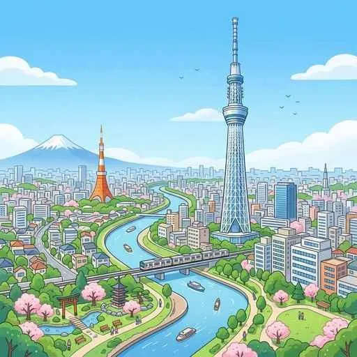
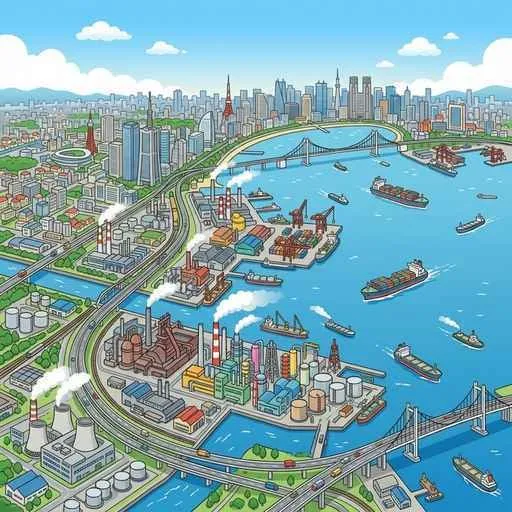
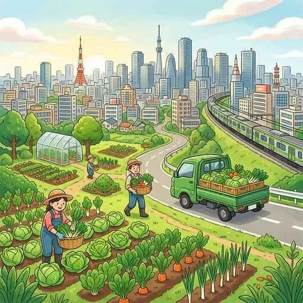

7. 関東地方
関東地方は、日本の総人口の約3分の1が集中する巨大な首都圏です。日本の政治・経済の中枢である東京への「一極集中」の現状とそれを緩和する新都心の取り組み、日本最大の関東平野が育む独自の自然と農業、そして全国の物流を支える三大工業地帯・地域と空港まで、テスト必須の知識を解説します！
1. 関東地方の自然環境（地形と風）
日本で最も広い平野が広がり、独特の土壌や冬の強い風が特徴です。

図1：日本最大の面積を誇る関東平野にそびえる「東京スカイツリー（634m）」
- 関東平野（かんとうへいや）：日本で最大の面積を持つ平野で、東京やその周辺府県にまたがります。
- 関東ローム：関東平野の台地を覆う、富士山や浅間山の過去の噴火による火山灰が堆積してできた赤黒い粘土質の土壌です。保水力が弱く稲作には向かないため、主に畑作に利用されます。
- 利根川（とねがわ）：流域面積が日本一の川で、「坂東太郎（ばんどうたろう）」の異名を持ちます。
- からっ風：冬の間、山脈を越えて関東平野に吹き下ろす、北西からの乾燥した強い季節風です。
- 小笠原諸島（おがさわらしょとう）：東京の南約1000kmに位置する絶海の孤島群。大陸と一度も繋がったことがないため、独自の進化を遂げた動植物が多く、「東洋のガラパゴス」とも呼ばれます。世界自然遺産です。
2. 首都東京と「一極集中」の対策
東京は、政治、経済、情報、文化の機能が過剰に集中する課題を抱えています。
- 一極集中（いっきょくしゅうちゅう）：日本の人や企業、諸機能が東京都区部（23区）に過度に進出して集中すること。地価高騰や通勤ラッシュ、災害時のリスクが課題です。
- 霞が関・永田町：国会議事堂や中央官庁、裁判所などが集まる、日本の政治の中心地です。
- 新都心（しんとしん／業務核都市）：一極集中を和らげるため、都心の機能を分散させる目的で指定された都市。さいたま新都心、幕張新都心（千葉）、横浜みなとみらい21（神奈川）などがあります。
- 巨大駅と臨海エリア：新宿や渋谷、池袋などの、都心と郊外を結ぶ起点・終点となる巨大な駅をターミナル駅と呼びます。また、東京湾岸の埋立地を再開発した「お台場」や「有明」などは臨海副都心（りんかいふくとしん）として有名です。
3. 関東の主要工業地帯と物流
太平洋沿岸の重化学工業から、内陸のハイテク工業までバランスよく発展しています。

図2：横浜港や川崎港を中心に、古くから日本をリードする「京浜工業地帯」
- 京浜工業地帯（けいひんこうぎょうちたい）：東京・神奈川・埼玉にまたがる、日本屈指の工業地帯。印刷業やハイテク機械工業などが盛んです。
- 京葉工業地域（けいようこうぎょうちいき）：千葉県の東京湾岸に位置し、石油化学コンビナート、製鉄所、火力発電所などの大型重化学工場が集積する臨海工業地帯です。
- 北関東工業地域：関越道や東北道などの高速道路網の整備に伴い、栃木・群馬・茨城の内陸部に発達した、自動車や電気機器の組み立て工場が多い工業地域です。
- 二大空港と研究都市：
- 羽田空港（東京国際空港）：東京都大田区にあり、国内線ネットワークの中心ですが、近年は国際線枠も拡大されています。
- 成田国際空港：千葉県にあり、国際線の玄関口。貿易額（特にIC等の輸出入）が日本一の港（空港）です。
- 筑波研究学園都市：茨城県つくば市にあり、国や民間の研究機関・大学が計画的に移転して作られた先端研究都市です。
4. 大消費地と直結した「近郊農業」の工夫
日本最大の消費地である東京が近いため、距離の近さを最大限に活かした効率的な農業が行われています。

図3：大都市の消費者に新鮮な野菜をすばやく届ける「近郊農業」
- 近郊農業（きんこうのうぎょう）：輸送距離が短いため、傷みやすいほうれん草や小松菜、ネギ、花などを新鮮なうちに収穫し、輸送コストを抑えて大都市市場へ素早く届ける農業です。茨城県や千葉県は近郊農業の野菜生産量が全国トップクラスです。
- 嬬恋村のキャベツ（抑制栽培）：群馬県の嬬恋（つまごい）村などの高冷地では、夏の涼しい気候を利用して、他の地域でキャベツがとれない夏〜秋にキャベツを収穫する抑制栽培（高原野菜）が大変有名です。
🔥 定期テスト対策・暗記のコツ
① 関東の3つの工業地帯・地域の区別（超頻出！）
・京浜工業地帯：東京〜横浜。機械・印刷・出版が盛ん。
・京葉工業地域：千葉湾岸。コンビナートや製鉄所などの素材工業。
・北関東工業地域：群馬・栃木。高速道路を活かした内陸型（自動車・電機）。
それぞれの場所と特徴の違いが記述や選択肢で本当によく出ます！
② 嬬恋村のキャベツと近郊農業の比較
「近郊農業＝消費地に近い（茨城・千葉）」➔ 新鮮さ優先。
「抑制栽培＝消費地から遠いが高冷地（嬬恋村）」➔ 時期をずらして高く売る。
この2つの農業スタイルの違い（距離と時期）をしっかり頭の中で整理しておきましょう！
③ 関東ロームとからっ風
「火山灰の赤黒い土 ➔ 関東ローム」「冬の乾燥した冷たい北西の風 ➔ からっ風」を正確な漢字で書けるようにしてください。